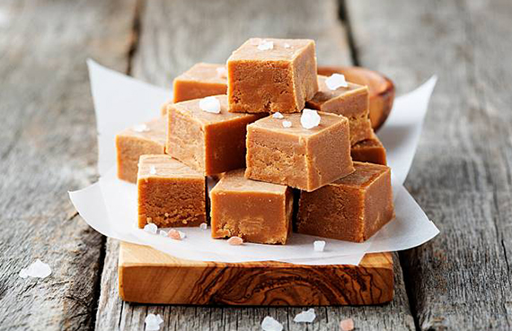

Manjar duro
Ingredientes:
- Leche condensada
- Azucar
- Vainilla
Pasos a seguir:
- Poner leche condensada y azucar a fuego medio.
- Revolver hasta que se ponga mas denso.
- Vertir en pote de vidrio no mas de 2 cm de grosor.
- Congelar por 30 min.
- Dejar secar por la noche.
- Cortar en cuadritos.